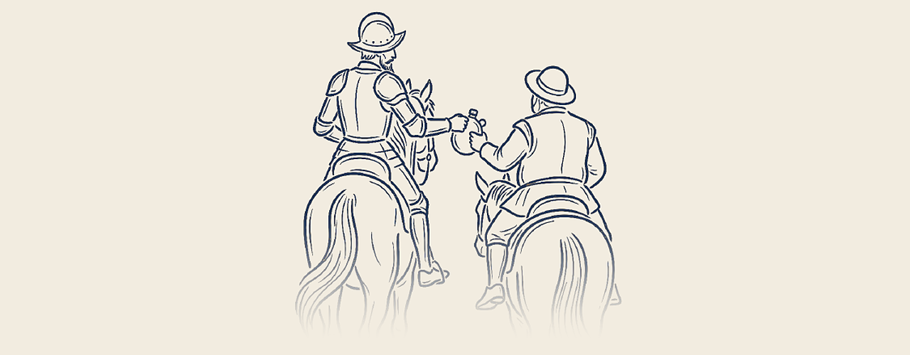

Whether you can't afford a lawyer, or you're in a forum like the Tribunal for Consumer Claims where lawyers are simply not allowed to represent you, Sancho helps you get ready: your documents in order, your story clear, and your nerves settled before you walk in.
Sancho offers preparation and practical guidance only. It is not legal advice, and Sancho does not speak for you at any hearing.

A short, plain-language checklist: what to bring, what to say, and the mistakes that trip people up most often at a first hearing.
Up to 90 minutes. We go through your documents together, put your story in order, and rehearse what you'll say — so the hearing itself holds no surprises. Get in touch to arrange a session and ask about fees.
No. Sancho prepares you, but you speak for yourself at the hearing.
No. Sancho gives practical preparation and guidance only. If you need legal advice, please speak to a practising lawyer.
Everything connected to your claim: contracts, receipts, messages, and any notice or letter from the tribunal or court.
A session runs up to 90 minutes and is held online, so you can join from wherever you are. We may offer in-person sessions in future.